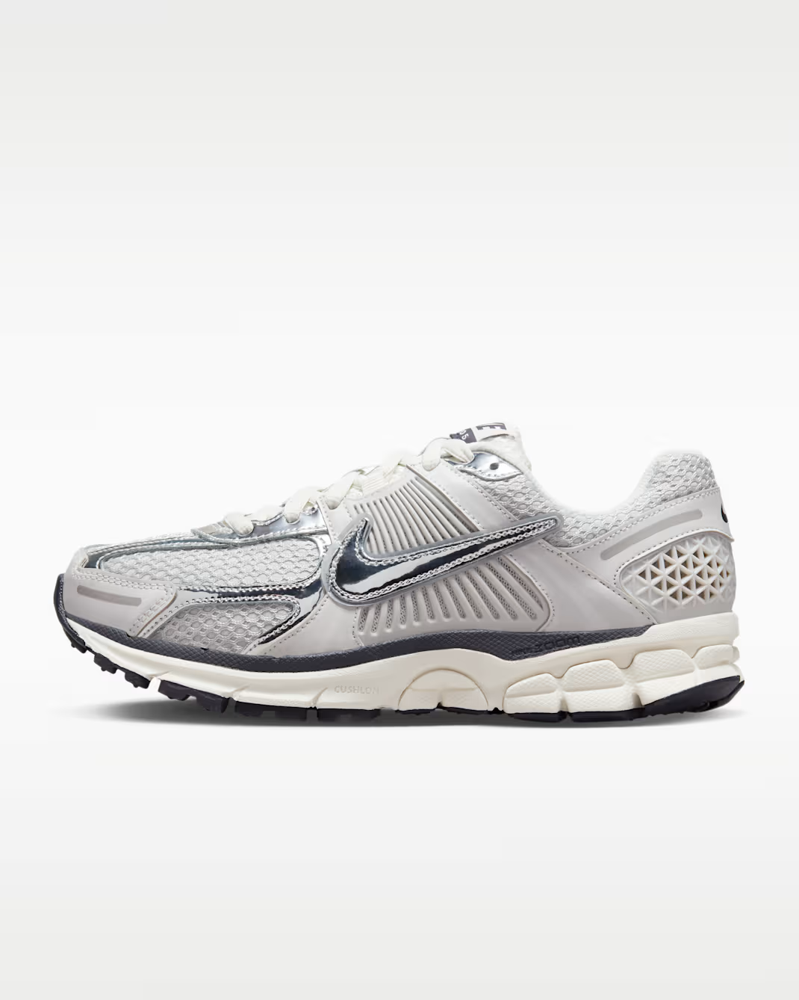
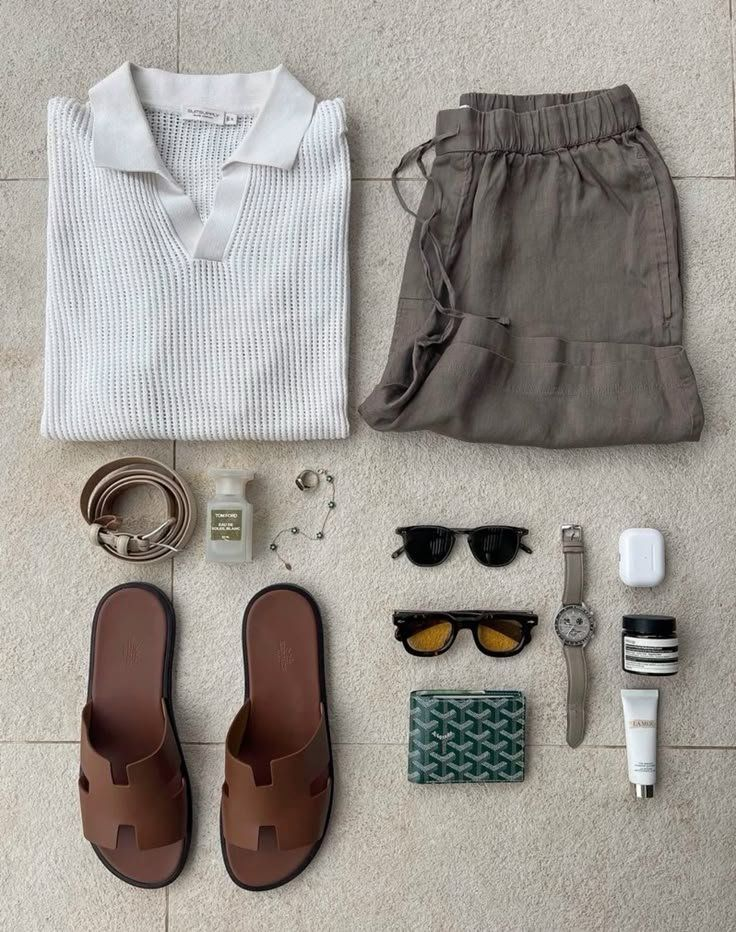
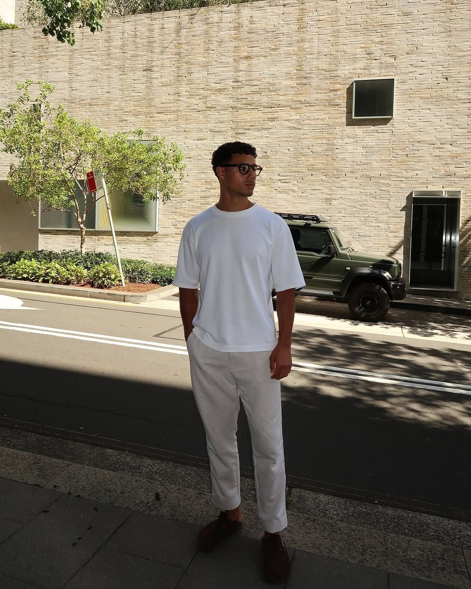
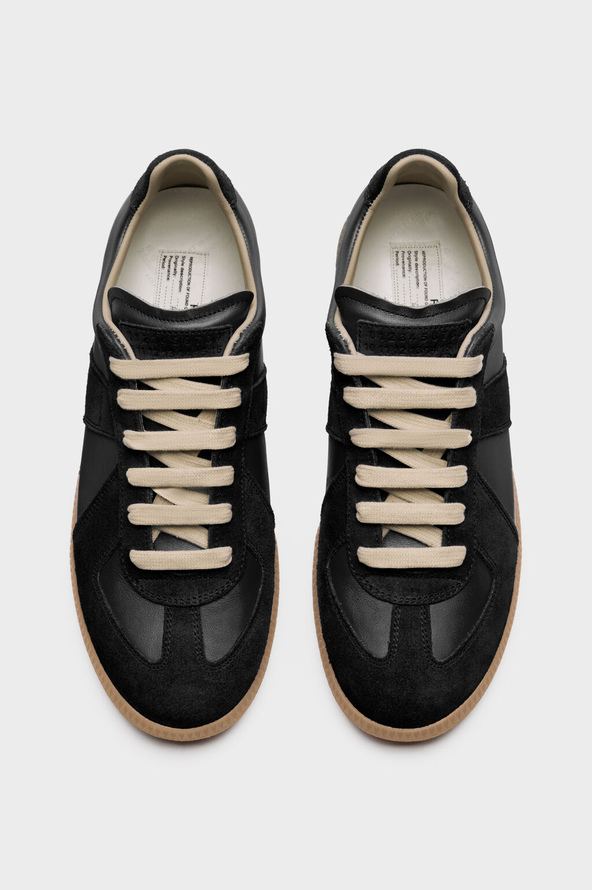
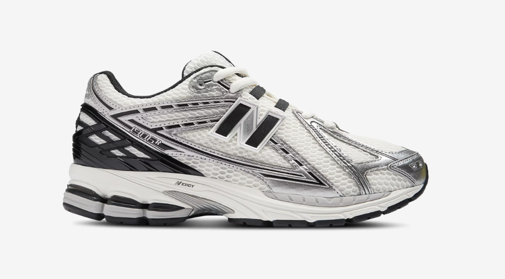
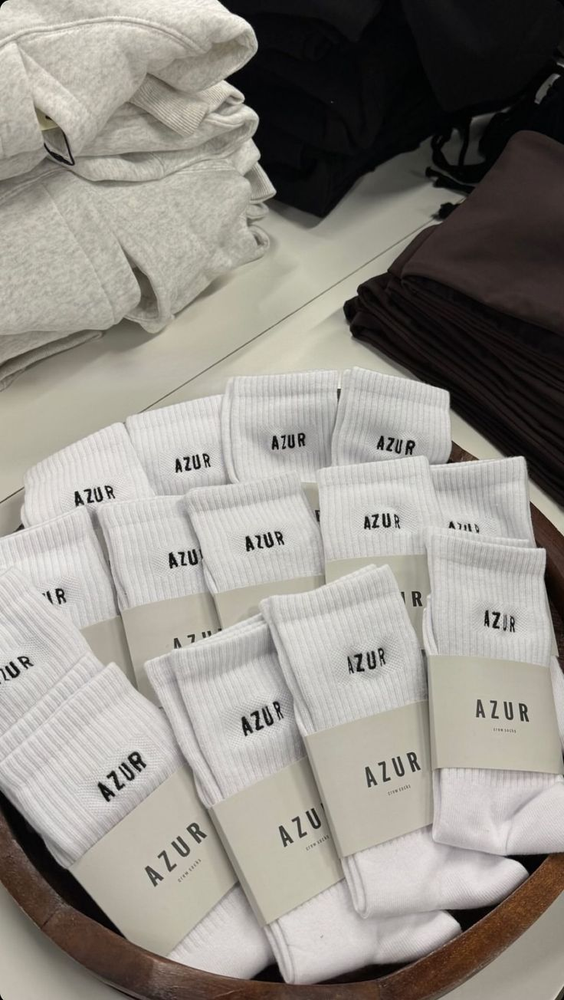
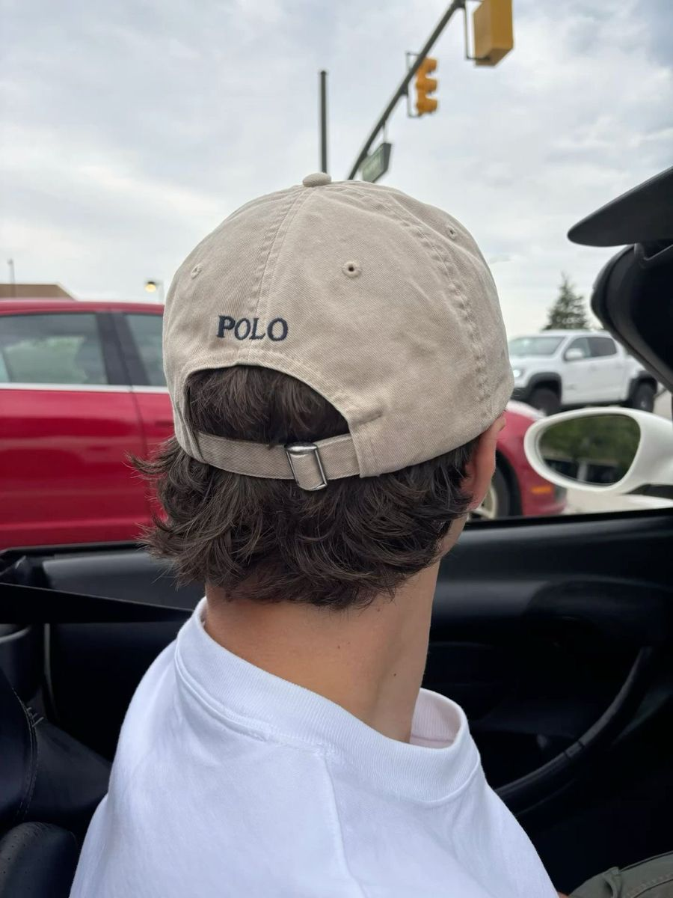
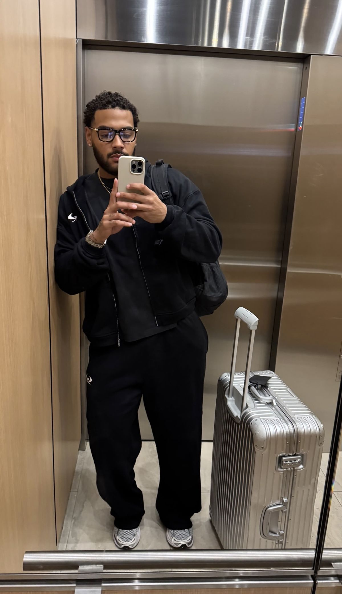

Athletic shoes
Clean runners first. They carry errands, travel, gym days, and relaxed pants.
Every man needs a clean base. Tees, pants, shoes, socks, underwear, and one good layer. Then the outfit starts looking intentional.
If the logo is doing all the work, the outfit is weak. Shape, cleanliness, and shoes carry the look.

The everyday pieces every man needs first. Buy them where you can actually replace them.

Clean runners first. They carry errands, travel, gym days, and relaxed pants.

Plain Uniqlo crewnecks first. Buy multiples once the fit is right.
Same fit as the white tee. Better for nights, travel, and darker shoes.

Margiela Replica/GAT lane: slim, low, easy with trousers.

A sportier runner for wider pants, busy days, and off-duty outfits.

White quarter socks first. Keep them fresh and replace pairs that look tired.
Choose 100% cotton. Black, gray, or white. Replace stretched pairs. The base layer matters.

Polo, plain cotton, or washed twill. Neutral color, curved brim, worn with restraint.

Before you leave, check the pant break, shoulder, sleeve, and shirt length. The last inch makes basics look intentional.
Once the starter rotation is handled, add pieces that give the outfit a point of view.
White, black, washed gray. Sleeve sits clean on the arm.
Cream, navy, black, or soft green. Zara, H&M, Abercrombie, or Massimo Dutti.
H&M or Zara. Cream, olive, black, or sand. Relaxed, not sloppy.
Open over a tee. Olive, navy, cream, or washed black.
H&M or Zara. White, light blue, cream, or soft stripe. Wear open over a tee.
H&M. White, beige, or olive. Cleaner than heavy denim in heat.
Birkenstocks or simple leather slides. Clean, neutral, no beat-up pool slides.
Ray-Ban for classic, Prada for sharper. Real UV protection, right size for your face.